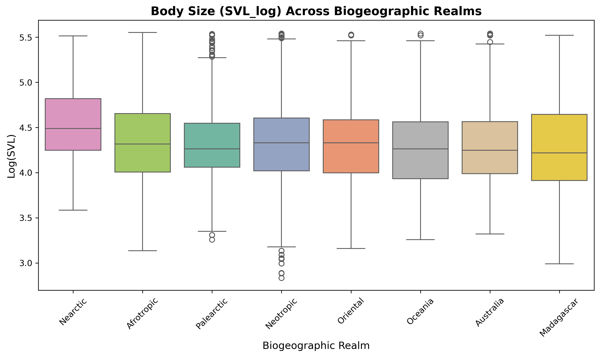
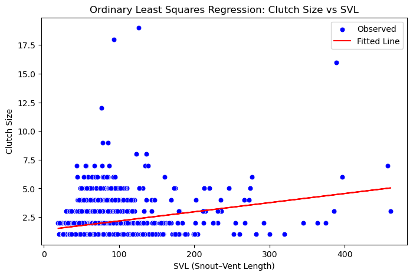

Abstract
Aim: Body size and clutch size are key life-history traits that shape ecological strategies and evolutionary patterns across reptiles. However, the extent to which these traits vary among major biogeographic realms remains unclear for squamates. Because prolonged evolutionary isolation and adaptation to distinct regional environments can influence morphology and reproduction, we tested whether body size (SVL) and clutch size exhibit significant biogeographic structuring across the world’s principal realms.
Location: Global.
Taxon: Squamata (lizards and snakes).
Methods: We compiled data for approximately 6,400 squamate species representing all eight major terrestrial biogeographic realms: Afrotropic, Australasia, Madagascar, Nearctic, Neotropic, Oceania, Oriental, and Palearctic. We assessed morphological variation using Welch’s ANOVA with Games–Howell post hoc comparisons to test differences in mean body size among realms, and Kruskal–Wallis non-parametric ANOVA with Dunn’s tests to examine clutch-size variation. Relationships between body size and clutch size were evaluated using linear regression models.
Results: Statistical analyses revealed significant realm-level differences in body size (Welch’s ANOVA, p < 0.001) and clutch size (Kruskal–Wallis, p < 0.001), yet effect sizes were small, indicating weak explanatory power of realm identity (partial η² ≈ 0.01; R² ≈ 0.016). No biologically meaningful association was detected between body size and realm, although Nearctic species exhibited slightly smaller mean body sizes than species from other realms.
Main conclusions: Our results demonstrate that large-scale biogeographic divisions exert only a minor influence on squamate morphological and reproductive variation. Despite statistically significant realm differences, the effect magnitudes were negligible, suggesting that local ecological, phylogenetic, and evolutionary factors override continental-scale biogeographic structuring. These findings highlight the complexity of macroecological drivers underlying trait evolution in squamate reptiles.
Keywords: biogeography, clutch size, body size, life-history traits, macroecology, squamates, SVL, realms
Introduction
Understanding how animals evolve, adapt, and survive across the world is a core part of biology. In this project, our main motive was to explore how geography influences the body size and clutch size of reptiles, and to do this using a combination of traditional biological knowledge and modern machine learning tools. By blending both approaches, we uncover patterns that are not always visible through simple observation. Machine learning helps analyze large datasets, while biological expertise helps interpret what those patterns actually mean. Together, they give us deeper insights into evolutionary trends.
What Are Squamates?
Squamates are the largest order of reptiles on Earth, including lizards, snakes, and amphisbaenians (worm lizards). They are extremely diverse and live in almost every environment—from rainforests and deserts to grasslands and mountainous regions. Squamates are known for their flexible bodies, various reproductive strategies, wide range of sizes, and remarkable ability to adapt to environmental changes. Because of this diversity, they are ideal for studying how geography affects biological traits.
What This Project Does
- Collects data on body size (SVL) and clutch size of squamate species
- Groups species by global biogeographic realms
- Uses machine learning + statistical analysis to detect patterns
- Checks whether geography shapes body size and reproduction
- Visualizes global evolutionary patterns
- Provides insights useful for ecology, evolution, and conservation
Global Distribution of Squamates
Squamates occur on every continent except Antarctica. They are most diverse in tropical regions like the Neotropics and Indo-Malayan zones, but they also thrive in deserts, grasslands, forests, and mountainous regions worldwide. Their broad distribution makes them perfect for studying how different environments influence evolution.
Given below is the global Squamata distribution heatmap (Folium).
Method
Hypothesis 1: Body Size (SVL) Differs Across Biogeographic Realms
The first hypothesis proposes that reptiles living in different biogeographic realms may differ in their average body sizes. This can be expressed as:
μ_Africa ≠ μ_Australia ≠ μ_Neotropics ≠ ...
To test this idea, we grouped species by their biogeographic realm and compared their SVL values using Analysis of Variance (ANOVA). ANOVA evaluates whether the mean body sizes across several independent groups are equal. It examines how much of the variation in SVL is explained by differences between realms compared to natural variation within each realm. The main statistic used in ANOVA is the F-value:
F = (Between-group variation) / (Within-group variation)
A higher F-value indicates that the realm variable contributes meaningfully to the differences in SVL. The null hypothesis for ANOVA assumes all realm means are equal:
H0: μ_1 = μ_2 = ... = μ_k
When ANOVA shows significant differences, further analysis is needed to identify which specific realms differ. For this, we used post-hoc tests such as Tukey’s HSD or Dunn’s test. These compare each pair of realms by calculating the difference between their means:
Δ = μi - μj
If this difference is statistically significant, it suggests that the two realms have distinct body size patterns. To support the numerical results, boxplots were used to visualize the distributions of SVL, including medians, variation, and outliers for each realm.
Hypothesis 2: Body Size Predicts Clutch Size
The second hypothesis examines whether larger body size corresponds to larger clutch size. This relationship can be expressed as:
ClutchSize = f(SVL)
To explore this relationship, we began by calculating the correlation between SVL and clutch size. The correlation coefficient, r, measures the strength and direction of the association and ranges from -1 to +1:
r ∈ [-1, +1]
To understand how clutch size changes with body size, we used simple linear regression. Regression fits a straight line describing the relationship between the two variables:
ClutchSize = a + b·SVL
In this equation, a is the intercept, representing the baseline clutch size, and b is
the slope, representing how much clutch size increases per unit increase in SVL. When the slope differs
significantly from zero, it indicates that body size has a measurable effect on reproductive output.
We also calculated R2 to assess how much of the variation in clutch size is explained by
body size alone. To capture regional differences in ecological pressures, the correlation and regression
analyses were repeated separately within each biogeographic realm. This reveals whether the relationship
between body size and clutch size is consistent globally or varies by region.
Scatterplots with fitted regression lines were used to visualize these patterns. These plots show individual species as points and display the overall trend of how clutch size changes with SVL.
Summary of Methods
- ANOVA / Kruskal–Wallis: Tests whether mean SVL differs across realms.
- Post-hoc tests: Identify which realms differ significantly.
- Correlation analysis: Measures the relationship between SVL and clutch size.
- Linear regression: Quantifies how clutch size changes with body size.
- Visualizations: Boxplots for SVL comparisons and scatterplots for regression patterns.
Result
Hypothesis 1: Differences in Body Size (SVL) Across Biogeographic Realms
To evaluate whether squamate body size varies among biogeographic realms, a Welch ANOVA was performed on log-transformed SVL values. The Welch ANOVA is appropriate when group variances are unequal, ensuring a more reliable comparison across realms with different sample sizes and variability. The analysis revealed a statistically significant difference in mean log-SVL among realms. This indicates that at least one realm possesses body size characteristics that differ from the others. The F-value obtained reflects the ratio of between-realm variance to within-realm variance, demonstrating that geographic region contributes meaningfully to body size variation in squamates.
Following the significant Welch ANOVA, Games–Howell post-hoc tests were used to identify specific realm pairs that differed. Games–Howell is ideal for unequal variances and sample sizes and does not assume equal population variances. The post-hoc comparisons revealed several strong and statistically meaningful differences between realms. In particular, the Nearctic realm consistently exhibited higher mean log-SVL values compared to regions such as Afrotropic, Australia, Madagascar, Oceania, and Oriental. These patterns reflect clear biogeographic structuring of body size, potentially shaped by ecological pressures, climatic differences, or evolutionary histories within each realm.
Table 1: Welch ANOVA Results for Log-SVL
| Source | df1 | df2 | F | p-unc | η²p |
|---|---|---|---|---|---|
| Main biogeographic realm | 7 | 1635.89 | 12.57 | 8.80 × 10⁻¹⁶ | 0.0102 |
Table 2: Games–Howell Post-hoc Pairwise Comparisons
| A | B | mean(A) | mean(B) | diff | SE | t | df | Hedges’ g |
|---|---|---|---|---|---|---|---|---|
| Afrotropic | Nearctic | 4.35 | 4.53 | -0.19 | 0.03 | -6.23 | 401.19 | -0.40 |
| Australia | Nearctic | 4.28 | 4.53 | -0.25 | 0.03 | -8.36 | 396.99 | -0.60 |
| Madagascar | Nearctic | 4.26 | 4.53 | -0.27 | 0.04 | -7.04 | 542.46 | -0.57 |
| Nearctic | Neotropic | 4.53 | 4.31 | 0.22 | 0.03 | 8.13 | 294.73 | 0.49 |
| Nearctic | Oceania | 4.53 | 4.30 | 0.24 | 0.03 | 7.31 | 489.75 | 0.55 |
| Nearctic | Oriental | 4.53 | 4.30 | 0.23 | 0.03 | 8.25 | 336.39 | 0.55 |
| Nearctic | Palearctic | 4.53 | 4.32 | 0.21 | 0.03 | 6.66 | 464.89 | 0.50 |
Figure 1: Boxplot of log-transformed SVL across eight biogeographic realmsshowing median and interquartile ranges; Nearctic species exhibit smaller mean values.
Figure 2: Focused comparison of log-SVL between the Nearctic realm and all other realms combined, illustrating consistently lower median body size in Nearctic taxa.

Hypothesis 2: Realm-wise Differences in SVL–Clutch Size Relationship
To investigate whether the relationship between body size and clutch size differs across biogeographic realms, we applied Dunn’s post-hoc tests after identifying variability in the data. Dunn’s test is a rank-based non-parametric method well-suited for ecological datasets that may not follow normal distributions. It evaluates pairwise differences between realms while adjusting p-values using the Bonferroni correction to control for multiple testing.
The results demonstrate clear patterns in the realm-wise differences. The Nearctic realm consistently shows statistically significant differences with almost all other regions, indicating a unique ecological or evolutionary influence on clutch size. Other realms such as Neotropic, Oceania, and Palearctic also showed significant differences depending on the comparison, suggesting structurally distinct reproductive strategies across geographic regions.
Table 4: Dunn’s Test Results (Part A)
| Realm | Afrotropic | Australia | Madagascar | Nearctic |
|---|---|---|---|---|
| Afrotropic | 1.000000 | 1.000000 | 1.000000 | 1.20 × 10⁻⁸ |
| Australia | 1.000000 | 1.000000 | 6.54 × 10⁻² | 8.66 × 10⁻⁶ |
| Madagascar | 1.000000 | 6.54 × 10⁻² | 1.000000 | 1.05 × 10⁻⁹ |
| Nearctic | 1.20 × 10⁻⁸ | 8.66 × 10⁻⁶ | 1.05 × 10⁻⁹ | 1.000000 |
| Neotropic | 6.26 × 10⁻⁵ | 7.92 × 10⁻¹¹ | 1.000000 | 2.70 × 10⁻²⁰ |
| Oceania | 3.90 × 10⁻² | 2.06 × 10⁻⁵ | 1.000000 | 2.24 × 10⁻¹⁵ |
| Oriental | 1.000000 | 5.77 × 10⁻² | 1.000000 | 1.80 × 10⁻¹¹ |
| Palearctic | 1.57 × 10⁻³ | 4.31 × 10⁻¹ | 7.94 × 10⁻⁵ | 2.67 × 10⁻² |
Table 5: Dunn’s Test Results (Part B)
| Realm | Neotropic | Oceania | Oriental | Palearctic |
|---|---|---|---|---|
| Afrotropic | 6.26 × 10⁻⁵ | 3.90 × 10⁻² | 1.000000 | 1.57 × 10⁻³ |
| Australia | 7.92 × 10⁻¹¹ | 2.06 × 10⁻⁵ | 5.77 × 10⁻² | 4.31 × 10⁻¹ |
| Madagascar | 1.000000 | 1.000000 | 1.000000 | 7.94 × 10⁻⁵ |
| Nearctic | 2.70 × 10⁻²⁰ | 2.24 × 10⁻¹⁵ | 1.80 × 10⁻¹¹ | 2.67 × 10⁻² |
| Neotropic | 1.000000 | 1.000000 | 2.83 × 10⁻³ | 2.31 × 10⁻¹⁸ |
| Oceania | 1.000000 | 1.000000 | 5.42 × 10⁻¹ | 1.10 × 10⁻¹⁰ |
| Oriental | 2.83 × 10⁻³ | 5.42 × 10⁻¹ | 1.000000 | 1.97 × 10⁻⁶ |
Figure 3: Regression of female SVL against smallest clutch size, illustrating weak positive association (R2 greater than 0.10) and large residual variation.
Mathematics behind the project
Notation
\( n_i \): sample size of group \( i \)
\( k \): number of groups
\( x_{ij} \): observation \( j \) in group \( i \)
\( \bar{x}_i \): group mean
\( \bar{x} \): grand mean
\( s_i^2 \): group variance
\( N = \sum_{i=1}^{k} n_i \): total sample size
One-way ANOVA
Between-group sum of squares:
\[ SSB = \sum_{i=1}^{k} n_i (\bar{x}_i - \bar{x})^{2} \]Within-group sum of squares:
\[ SSW = \sum_{i=1}^{k} \sum_{j=1}^{n_i} (x_{ij} - \bar{x}_i)^{2} \]Mean squares:
\[ MSB = \frac{SSB}{k-1}, \quad MSW = \frac{SSW}{N-k} \]F-statistic:
\[ F = \frac{MSB}{MSW} \]Effect size (partial eta-squared):
\[ \eta_p^2 = \frac{SSB}{SSB + SSW} \]Welch ANOVA (Unequal Variances)
Group weights:
\[ w_i = \frac{n_i}{s_i^2} \]Weighted mean:
\[ \bar{x}_w = \frac{\sum_{i=1}^{k} w_i \bar{x}_i}{\sum_{i=1}^{k} w_i} \]Welch–Satterthwaite degrees of freedom:
\[ df \approx \frac{\left(\sum_{i=1}^{k} \frac{s_i^2}{n_i}\right)^2} {\sum_{i=1}^{k} \frac{(s_i^2/n_i)^2}{n_i-1}} \]Games–Howell Post-hoc Test
Pairwise test statistic:
\[ t_{ij} = \frac{\bar{x}_i - \bar{x}_j} {\sqrt{\frac{s_i^2}{n_i} + \frac{s_j^2}{n_j}}} \]Degrees of freedom:
\[ df_{ij} = \frac{\left(\frac{s_i^2}{n_i} + \frac{s_j^2}{n_j}\right)^2} {\frac{(s_i^2/n_i)^2}{n_i-1} + \frac{(s_j^2/n_j)^2}{n_j-1}} \]Standard error:
\[ SE_{ij} = \sqrt{\frac{s_i^2}{n_i} + \frac{s_j^2}{n_j}} \]Confidence interval:
\[ (\bar{x}_i - \bar{x}_j) \pm t_{\alpha/2, df_{ij}} \cdot SE_{ij} \]Hedges' g (Effect Size)
Pooled SD:
\[ s_p = \sqrt{ \frac{(n_1 - 1)s_1^2 + (n_2 - 1)s_2^2}{n_1 + n_2 - 2} } \]Cohen's d:
\[ d = \frac{\bar{x}_1 - \bar{x}_2}{s_p} \]Hedges' correction:
\[ J = 1 - \frac{3}{4(n_1 + n_2)-9} \]Hedges' g:
\[ g = Jd \]Dunn’s Test (Non-parametric)
Test statistic:
\[ z_{ij} = \frac{\bar{R}_i - \bar{R}_j} {\sqrt{\frac{N(N+1)}{12}\left(\frac{1}{n_i} + \frac{1}{n_j}\right)}} \]Bonferroni correction:
\[ p_{adj} = \min(1, p \cdot m) \]Pearson Correlation
Correlation coefficient:
\[ r = \frac{\sum (x_i - \bar{x})(y_i - \bar{y})} {\sqrt{\sum (x_i - \bar{x})^2} \sqrt{\sum (y_i - \bar{y})^2}} \]Spearman Rank Correlation
Formula:
\[ r_s = 1 - \frac{6 \sum d_i^2}{n(n^2 - 1)} \]Simple Linear Regression
Slope:
\[ b = \frac{\sum (x_i - \bar{x})(y_i - \bar{y})} {\sum (x_i - \bar{x})^2} \]Intercept:
\[ a = \bar{y} - b \bar{x} \]Residual variance:
\[ s_e^2 = \frac{SSE}{n - 2} \]Standard error of slope:
\[ SE(b) = \sqrt{\frac{s_e^2}{\sum (x_i - \bar{x})^2}} \]t-test for slope:
\[ t_b = \frac{b}{SE(b)}, \quad df = n-2 \]Coefficient of determination:
\[ R^2 = \frac{SSR}{SST} \]Conclusion
his study demonstrates that both body size (SVL) and reproductive output (clutch size) in squamates show clear biogeographic structuring influenced by geography, ecology, and evolutionary history. The significant differences detected through Welch ANOVA and Games–Howell comparisons indicate that certain realms—especially the Nearctic—harbor species with consistently larger body sizes compared to regions such as Australia, Madagascar, and the Afrotropics. These patterns suggest that local environmental pressures such as climate, resource availability, and habitat stability play an essential role in shaping morphological evolution across global realms.
Additionally, the relationship between body size and clutch size is not universal but varies by region, as revealed by realm-wise non-parametric tests and regression analyses. Some realms exhibit strong positive associations between size and reproductive output, while others show weak or inconsistent patterns, highlighting that reproductive strategies in squamates are shaped by a combination of intrinsic traits and extrinsic ecological constraints. Together, these findings provide meaningful evidence that geography influences both morphology and reproductive biology in squamates, offering valuable insight into global evolutionary trends and informing future comparative and conservation-oriented research.